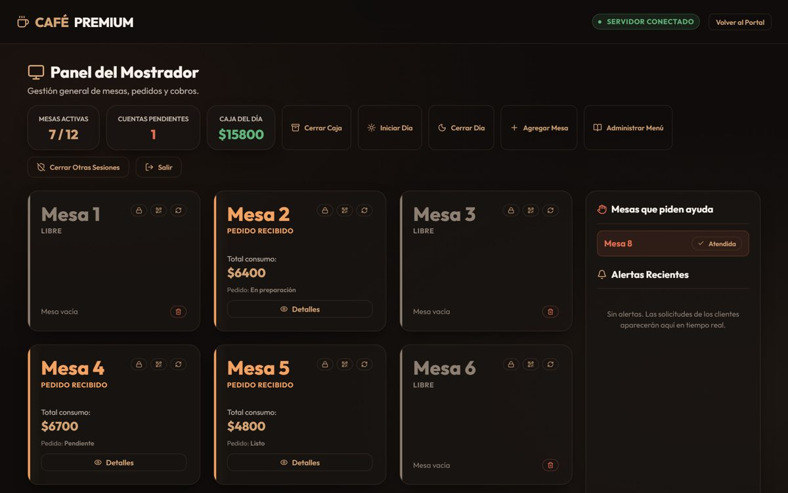
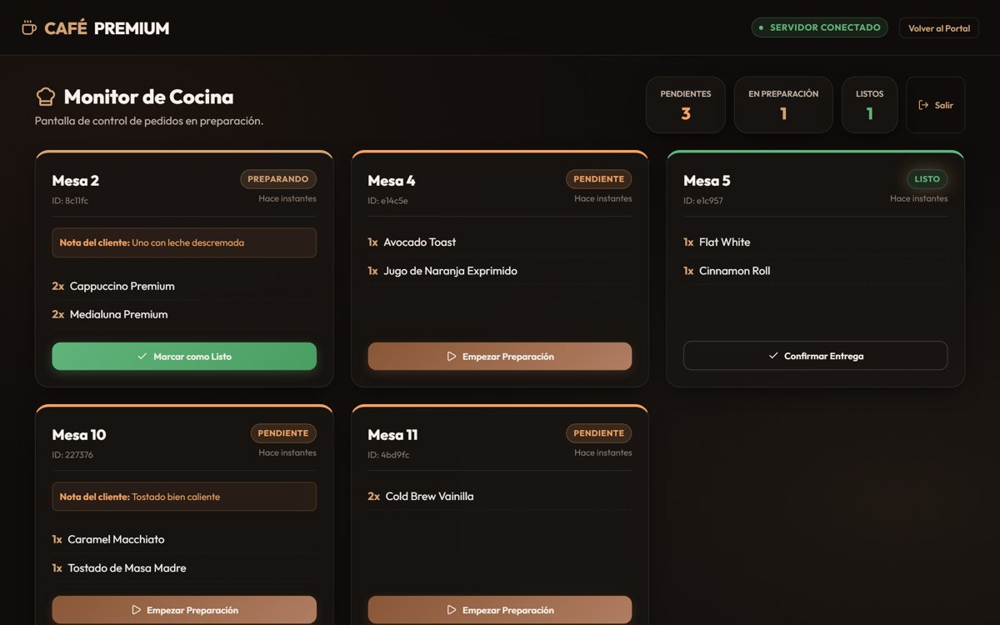

Comanda
Pedidos en tiempo real por QR para cafeterías
Real-time QR table ordering for cafés
- Tres vistas sincronizadas por WebSockets: cliente (QR de la mesa), cocina y mostrador.
- Capa de dominio separada con tests unitarios y 22 tests end-to-end con Playwright.
- Autenticación con sesiones revocables y freno de intentos de login; despliegue como servicio único.
- Three views synchronized over WebSockets: customer (table QR code), kitchen and counter.
- Separate domain layer covered by unit tests, plus 22 end-to-end tests with Playwright.
- Authentication with revocable sessions and login throttling; single-service deployment.